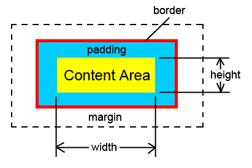

CSS - Margin, Padding, and Border
Sun Oct 19
It’s important to understand the difference between margin, border and padding when building a website to make sure it looks exactly the way you intend it to be.
Let’s look at this diagram:
Think of the “content” here as a box. It lives in a website with other boxes. And you like this box and decide to add a margin, some padding and border to it. Here’s what happens:
Margin: If you set the box’s margin to 10 pxs all around, it will create a space of 10px in each direction. This space refers to the exact “distance” between your content box and the other boxes around it. What’s important to remember that this space does not belong to your content box. If it is next to another box which also has a margin of 10 px, they would still be 10 px away from each other - not 20 px. They can both use that space for “distance”.
Padding: Now that you’ve put some distance between your box and the others, you also decide you want some padding as well. And you set a padding of 10 px all around. What happens is that you add 10 px of space to each side of your content. The difference between padding and margin is this padding area belongs to your special content box that you like so much.
For example, let’s say you gave your box a 10 px padding all around, but didn’t set a margin this time. Right next to it is a box that has a margin set to 10 px. What do you think the distance will be between your content and that box? That’s right, 20 px. Because the padding area belongs to your content and can’t be used as a margin by that other box.
Border: This is an easy one. Where do we set borders in real life, whether it be physical or emotional or mental? Around an area that belongs to us. That applies here as well. The border goes around the padding, if there is one. And if not, than it surrounds the content.
I hope this helped!